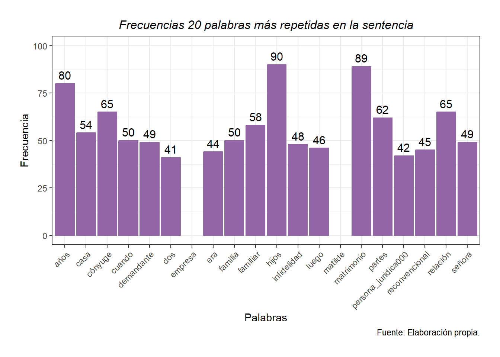

I. Análisis léxico-estadístico
a) Palabras más repetidas
b) Oraciones de palabras claves
Casa
| Oración anterior | Palabra | Oración posterior |
|---|---|---|
| , las partes contrajeron matrimonio y comenzaron a vivir juntos en una | casa | que arrendaban en la localidad de direccion002 . para ese entonces él |
| 13 años . así , el grupo familiar se trasladó a su | casa | familiar recién construida . refiere que , con ocasión a que el |
| apoderada del colegio le comenta que , en un asado en su | casa | , el sr . [ césar ] había confesado tener una relación |
| en noviembre de 2008 , y comenzaron a vivir juntos en una | casa | que arrendaban en la localidad de direccion002 . añade que para ese |
| . explica que debido a las largas horas de trabajo lejos de | casa | y el interés de formar una vida más familiar y con hijos |
| las partes : [ ricardo ] , y se trasladan a su | casa | familiar recién construida . señala que , con ocasión a que el |
| un acuerdo extrajudicial donde ella y los hijos se quedan en la | casa | y el paga y aporta dinero , continua pagando contribuciones , colegios |
| , continua pagando contribuciones , colegios , salud , asume suministros de | casa | , guardia que tenían en la casa , mantuvo los gastos de |
| salud , asume suministros de casa , guardia que tenían en la | casa | , mantuvo los gastos de salud , pero hubo dificultades en el |
| meses de cotizaciones . don [ césar ] al irse de la | casa | , inicia una nueva relación de pareja en el año 2022 con |
| de pesos , además paga el colegio de sus hijos , la | casa | fue declarada bien familiar , paga las contribuciones , los traslada a |
| los gastos de salud . , pagaba todos los gastos de la | casa | y le daba $ 1.500.000 hasta que le rebaja el monto unilateralmente |
| . no entregó documentación de respaldo respecto de los gastos de la | casa | . concluye que los ingresos de la señora [ matilde ] los |
| $ 327.000 mensual más lo que recibe por el arriendo de su | casa | , es decir total $ 677.000 , y tiene un ahorro previsional |
| la convivencia duró 143 meses , ninguno entregó los gastos de la | casa | . ambos tienen isapre , desde el punto de vista del ahorro |
| cuál es sabe que es una camioneta , aclara que en la | casa | de doña [ matilde ] hay un cuidador , o guardia de |
| doña [ matilde ] hay un cuidador , o guardia de la | casa | , no sabe si le paga don [ césar ] o la |
| año 2023 , pero no sabe si tiene otros beneficios como la | casa | o el vehículo . dice que los gastos de las partes son |
| y psicopedagoga y siempre ha estado ella presente . además , la | casa | en la que vive es muy grande por lo que también implicaba |
| viven juntos , aproximadamente desde el año 2021 , vivían en una | casa | camino a direccion002 , tienen 3 hijos en común , [ paolo |
| se separó vivió un tiempo con el papá y ahora arrienda una | casa | en curicó , vive con nueva pareja llamada [ elisa ] . |
| [ elisa ] . doña [ matilde ] vive en la misma | casa | de siempre . añade que los directivos de persona_juridica000 no cumplen un |
| identidad n ° num004 , 49 años , casada , dueña de | casa | . señala conocer a [ césar ] porque es su hermano , |
| infidelidad ocurrió , su hermano se fue a vivir luego a una | casa | de la familia y [ matilde ] vive donde siempre en la |
| de la familia y [ matilde ] vive donde siempre en la | casa | familiar de ellos . no tiene conocimiento de cuando gana su hermano |
| fue el 2010 a santiago , cuando viene se queda en la | casa | de su padre . dice que la empresa tiene camiones , un |
| , esto hace que don [ césar ] se vaya de la | casa | y se fuera a iquique , [ matilde ] mantiene una conversación |
| la crianza de los hijos se hizo bajo rol de dueña de | casa | y madre y el señor se dedicó a un rol proveedor . |
| año y con eso más finiquito frutifor , ella se compra una | casa | que es el único inmueble adquirido durante el matrimonio que hoy le |
| sitio , que le costó 12 millones y allí se construyeron su | casa | con los réditos de persona_juridica011 , la casa no tiene deuda y |
| allí se construyeron su casa con los réditos de persona_juridica011 , la | casa | no tiene deuda y posee un avalúo fiscal $ 230.000.000 ( sitio |
| su actividades laborales normales . dentro del patrimonio de él está la | casa | en que vive la cónyuge en direccion003 y hoy tiene un avalúo |
| que recibió de lo que trabajó con su marido se compró la | casa | y el marido le aportó entre 10 y 15 millones para arreglarla |
| medida , el matrimonio produjo un distanciamiento del mercado laboral , se | casa | a los 28 años y se separa a los 40 años con |
| san pedro en periodo de vendimia , con estos réditos paga la | casa | , y ella presta servicios junto a la esposa del primo en |
| % cuando el marido absorbe o sustenta mayormente los gastos de la | casa | . si esa cifra se dobla para hacer un gasto real y |
| que el señor [ césar ] , no paga arriendo en la | casa | que habita porque es de una sociedad a la que pertenece . |
| hijos , se fue donde su padre y ahora vive en una | casa | familiar , luego fueron juntos a disney y regresaron cada uno a |
| , luego fueron juntos a disney y regresaron cada uno a su | casa | . hoy él tiene pareja hace dos años , vive con ella |
| , persona_juridica000 tiene una bodega de vinos y sociedad persona_juridica001 tiene una | casa | , un departamento . dice que en la empresa no tiene cargo |
| no se hacen retiros de utilidades . dice que vive en la | casa | de la familia que está a nombre de sociedad persona_juridica001 , no |
| identidad n ° num005 , 33 años , soltera , dueña de | casa | , señala que conoce a doña [ matilde ] , es su |
| el resto del tiempo se dedicaba a sus hijos era dueña de | casa | , ella se encargaba de transportar a los niños , de esas |
| prima , se cobraran los subsidios . dice que ella visitaba la | casa | familiar de las partes , había una nana que ayudaba en las |
| cosas domésticas , y [ matilde ] cumplía funciones de dueña de | casa | y de madre . siempre hubo servicio doméstico . dice que la |
| explotó en septiembre de 2020 , ahí él se fue de la | casa | , ahí se quebró totalmente la relación , no puede decir si |
| otro hermano , jorge , lo llamó para que fuera a su | casa | , en ese tiempo el testigo vivía con sus papás . le |
| la relación , [ césar ] salió esa misma noche de la | casa | y nunca más volvieron como pareja , lo sabe por su hermana |
| de eso en los asados . su hermana se dedicaba a la | casa | , los niños estudiaban en el colegio persona_juridica007 , [ matilde ] |
| , [ víctor ] , lo llamó para que fuera a su | casa | , en ese tiempo el testigo vivía con su papás . le |
| el gatillante de la salida del señor [ césar ] de la | casa | familiar y que se debe al descubrimiento por parte de su cónyuge |
| estrados que al regresar del viaje cada uno se fue para su | casa | , lo que en definitiva corrobora , que no hubo tal “ |
| el direccion003 de direccion002 , donde posteriormente contraída las nupcias construye la | casa | familiar . consta igualmente , por los atestados de las partes que |
| l matrimonio le produjo un distanciamiento del mercado laboral , pues se | casa | a los 28 años y se separa a los 40 años con |
Cónyuge
| Oración anterior | Palabra | Oración posterior |
|---|---|---|
| y reiterada del deber de fidelidad propio del matrimonio por parte del | cónyuge | demandante , siendo la sra . [ matilde ] titular de la |
| matrimonio civil ; en contra de su | cónyuge | don [ césar ] , cédula nacional de identidad n ° num000 |
| que arrendaban en la localidad de direccion002 . para ese entonces él | cónyuge | se desempeñaba en la empresa de su familia “ persona_juridica000 ” , |
| previsión , firmó un contrato de trabajo con la empresa de su | cónyuge | ( “ persona_juridica000 ” ) , en donde si bien firmaba liquidaciones |
| , la sra . [ matilde ] confirma la infidelidad de su | cónyuge | . |
| advierte que doña [ ester ] , no sólo trabajaba con el | cónyuge | culpable , sino también es pareja del hermano de la señora [ |
| cuñada . explica que con el tiempo , las salidas en el | cónyuge | culpable y su cuñada fueron cada vez más evidentes , sumándole transferencias |
| acercamientos cariñosos , entre otros . por si fuera poco , el | cónyuge | culpable comentaba a viva voz con otras personas , que le producía |
| intimidad que ella . así las cosas , la infidelidad entre el | cónyuge | culpable y la cuñada de la señora [ matilde ] , refiere |
| de 2020 , alrededor de las 11 de la noche , el | cónyuge | culpable recibe una llamada del hermano de doña [ matilde ] , |
| de 5 minutos para irse nuevamente . al día siguiente , el | cónyuge | presuntamente culpable le comunica a doña [ matilde ] que se va |
| hasta finalmente terminarla con la certeza de una relación extramarital que el | cónyuge | llevaba con su cuñada por años , y que en definitiva fue |
| . que la causal se funde en una falta imputable al otro | cónyuge | . 2 . que ello constituya una violación grave de los deberes |
| y reiterada del deber de fidelidad propio del matrimonio por parte del | cónyuge | don [ césar ] , con expresa condena en costas , declarando |
| impetrada reconvencionalmente , interpone demanda de compensación económica en contra de su | cónyuge | don [ césar ] , ya individualizado . funda su acción señalando |
| suma $ 1.500.000 mensuales . refiere que antes de conocer a su | cónyuge | , la sra . [ matilde ] y desde el año 2006 |
| en la localidad de direccion002 . añade que para ese entonces él | cónyuge | se desempeñaba en la empresa familia de “ persona_juridica000 ” , y |
| interés de formar una vida más familiar y con hijos , su | cónyuge | en el año 2009 le propuso dejar de trabajar , por lo |
| en el año 2010 , ya sin fuente laboral , a su | cónyuge | - sr . [ césar ] - le ofrecen encargarse por un |
| previsión , firmó un contrato de trabajo con la empresa de su | cónyuge | ( “ persona_juridica000 ” ) desde el año 2010 al 2017 , |
| cuidado de los niños , y es así que comportamientos erráticos del | cónyuge | aumentaron más y más , descontrolándose a tal punto de llegar a |
| hasta finalmente terminarla con la certeza de una relación extramarital que el | cónyuge | llevaba con su cuñada por años . así las cosas , señala |
| es evidente que , desde un comienzo , prestó colaboración a su | cónyuge | postergándose , lo que permitió al sr . [ césar ] acceder |
| la progresión de su carrera . respecto de las mala fe del | cónyuge | hace especial énfasis en que el quiebre conyugal no solo se produjo |
| a entender que , pese a que ella insistía sostener que su | cónyuge | tenía una amante , pues relata en su demanda que recibía comentarios |
| de nuestra zona , que es fruto del trabajo del padre del | cónyuge | y su hermano . hoy luego del fallecimiento , la participación del |
| prestado la actora reconvencional al favorecimiento de las actividades lucrativas de su | cónyuge | y demandado de autos . séptimo : que en audiencia de juicio |
| la única propiedad a su nombre es en la que vive su | cónyuge | e hijos y el valor fiscal es de $ 230.000.000 . las |
| , sabe que está en un juicio de divorcio , de su | cónyuge | [ matilde ] , ellos se casaron en 2009 cree , no |
| la situación con la señora [ ester ] , quien era la | cónyuge | de su hermano , que se descubre por un ramo de flores |
| tener relaciones matrimoniales placenteras producto de las operaciones de mamas de su | cónyuge | . |
| asesora de hogar era pagada y contratada por la empresa de su | cónyuge | y la crianza de los hijos se hizo bajo rol de dueña |
| dentro del patrimonio de él está la casa en que vive la | cónyuge | en direccion003 y hoy tiene un avalúo comercial de más de $ |
| vehículos que utiliza son de la empresa . en cuanto a la | cónyuge | dice que ella desde la separación se ha mantenido residiendo junto a |
| el artículo 54 , en cuyo caso la acción corresponde sólo al | cónyuge | que no hubiere dado lugar a ella . finalmente , el artículo |
| en el mes de septiembre de 2020 , por falta imputable al | cónyuge | , constitutiva de una |
| vida en común . cabe señalar que , al respecto , la | cónyuge | demandante reconvencional señala que la culpa de tornar intolerable la vida en |
| de tornar intolerable la vida en común fue la conducta de su | cónyuge | , concretamente por a ) transgresión grave y reiterada del deber de |
| ambas partes , esencialmente la testimonial , se concluye efectivamente que el | cónyuge | mantuvo una relación extramarital con doña [ ester ] , por más |
| y se va del inmueble que hasta esa fecha compartía con su | cónyuge | , iniciándose así la separación de hecho entre las partes , la |
| probada la infracción reiterada al deber de fidelidad que para con su | cónyuge | debía tener el señor [ césar ] . así , por ejemplo |
| juicio de esta sentenciadora las probanzas que conducen a concluir que el | cónyuge | don [ césar ] , mantuvo una relación paralela a su matrimonio |
| casa familiar y que se debe al descubrimiento por parte de su | cónyuge | de dicha infidelidad y es por dicho motivo y no otro , |
| debido al quiebre de la relación matrimonial por la infidelidad de su | cónyuge | . |
| por infidelidad , consistente en el desarrollo de sintomatología por parte del | cónyuge | afectado por la infidelidad , y que en el caso , de |
| son los involucrados en la infidelidad , pues no es sólo su | cónyuge | , sino también , la pareja de su hermano y madre de |
| matilde ] , doña [ verónica ] , se advierte que la | cónyuge | debió iniciar terapia psicológica producto del quiebre conyugal , y se mantiene |
| reiterada en el tiempo del señor [ césar ] respecto de su | cónyuge | . - respecto de la demanda rfeconvencional de compensación económica décimo cuarto |
| común . 2 . - que como consecuencia de dicha dedicación ese | cónyuge | no haya podido desarrollar una actividad remunerada o lucrativa , o lo |
| todo lo que en el caso de autos le correspondió a la | cónyuge | y que fue lo que hizo , efectivamente doña [ matilde ] |
| , y si bien el señor [ césar ] alega que su | cónyuge | al terminar la relación laboral con la empresa frutifor el año 2009 |
| vehículo marca kia modelo carnival , año 2018 , mientras que su | cónyuge | quien , si bien ingresa al matrimonio siendo parte de dos sociedades |
| desarrollarse libre y tranquilamente en el plano laboral , pues era su | cónyuge | quien lo apoyaba en la crianza de sus tres hijos y administración |
| , deja efectivamente a la señora [ matilde ] como a la | cónyuge | más débil , considerando que contrajo matrimonio cuándo ya llevaba varios años |
| señora [ matilde ] , actualmente habita vivienda de propiedad de su | cónyuge | declarada bien familiar , sólo registra como propiedad una vivienda avaluada en |
| como persona natural una propiedad que es la que habita actualmente su | cónyuge | e hijos , declarada bien familiar en direccion003 de direccion002 . además |
| matilde ] , en una situación de debilidad económica respecto de su | cónyuge | , resultando necesario morigerar su condición vulnerable , en aras a que |
| en caja de $ 667.645.548 . en definitiva , si bien el | cónyuge | demandado reconvencionalmente , señaló no tener mayores bienes , lo cierto es |
| la realidad . - 4 . edad y estado de salud del | cónyuge | beneficiario : que las partes tienen 46 años de edad y ambos |
| . - colaboración que hubiere prestado a las actividades lucrativas del otro | cónyuge | . que , sobre este punto y no obstante existir el antecedente |
| como proveedor , el soporte de cuidado del hogar lo brindó la | cónyuge | demandante . en consecuencia , conforme la prueba rendida , se puede |
| [ césar ] . por lo que , el carácter de “ | cónyuge | más débil ” de la |
| , resultando necesario que el demandado compense el menoscabo causado a su | cónyuge | . - vígésimo : que , teniendo en consideración que la última |
| completamente a sus hijos y labores del hogar que compartió con su | cónyuge | , laborando para la empresa agrícola frutifor , decía relación al momento |
| relación con 11 años y 2 meses ( calculado desde que la | cónyuge | deja de trabajar hasta el quiebre de la convivencia entre las partes |
Familia
| Oración anterior | Palabra | Oración posterior |
|---|---|---|
| encuentran discutiendo en causa rit : c-38-2024 seguida ante el juzgado de | familia | de curicó , en donde con fecha 23 de enero de 2024 |
| para ese entonces él cónyuge se desempeñaba en la empresa de su | familia | “ persona_juridica000 ” , y doña [ matilde ] llevaba alrededor de |
| 2024 seguida ante el juzgado de | familia | de curicó , en donde con fecha 23 de enero de 2024 |
| añade que para ese entonces él cónyuge se desempeñaba en la empresa | familia | de “ persona_juridica000 ” , y la demandante reconvencional llevaba alrededor de |
| a trabajar para la empresa familiar , esto es , para la | familia | [ correa ] , que posee una conocida empresa de transportes de |
| , la demandante , comenzó a trabajar en el rubro de la | familia | , taras vitivinícolas y de transporte , cuestión que ahora pretende desconocer |
| copia integra de los autos rit n ° c-38-2024 del juzgado de | familia | de curicó hasta 25 de octubre de 2024 . pericial : comparece |
| con los niños , salían de vacaciones , hicieron una vida de | familia | tranquila . en el año 2020 ocurre la separación él hace abandono |
| césar ] trabaja en persona_juridica000 , siempre para las empresas de su | familia | , él también tuvo un contrato de trabajo desde 2010 a 2017 |
| [ césar ] participa en 4 sociedades , todas asociadas a la | familia | , y en su declaración de patrimonio , tiene 50 % de |
| y él se mantuvo a cargo de costear los gastos de la | familia | . esta dinámica la mantuvo hasta el año 2023 cuando el redujo |
| unilateralmente el año 2023 y reduce el pago de suministros . la | familia | reside en la vivienda familiar de 400 metros cuadrados . con todas |
| 5 meses en la vendimia solamente . había servicio doméstico en la | familia | y doñas [ matilde ] se preocupaba de los niños , por |
| su hermano se fue a vivir luego a una casa de la | familia | y [ matilde ] vive donde siempre en la casa familiar de |
| visualiza que doña [ matilde ] mantiene una cercanía afectiva con su | familia | de origen , es la mayor de sus hermanos . es originaria |
| . recuerda haber sido responsable desde pequeña , con pequeños emprendimientos , | familia | de mucho esfuerzo , ella continúa estudiando y logra ingresar a la |
| bien propio . cuando tiene que tomar decisiones en relación de la | familia | , se advierte que ella pospone sus intereses personales , lo que |
| que para la peritada fue una fuente de gratificación y satisfacción su | familia | achoclonada , siendo su madre un ente de apoyo emocional y para |
| tradición familiar paterna de poner el nombre del padre , pero la | familia | paterna , se mantenía más bien a distancia . con el nacimiento |
| o traición mas allá del matrimonio , sino que también a la | familia | extensa . la madre y amiga señalaron en entrevista , que en |
| causado . en cuanto a que se pospone en favor de la | familia | , dice que cuando ella estaba embarazada de su primer hijo , |
| hacer feliz a su suegra , ella cede en beneficio de su | familia | extensa , aunque esa familia no fuera tan cercana o ella no |
| , ella cede en beneficio de su familia extensa , aunque esa | familia | no fuera tan cercana o ella no fuese tan aceptada . tampoco |
| en frutifor y el peritado trabajo en empresa de transporte de su | familia | , aparece con pagos previsionales , con renta presunta declarada ante el |
| no lo haya hecho , pero su rol al interior de la | familia | era preferentemente la dedicación al trabajo . añade que . luego de |
| hoy al mercado laboral . él dice que ella trabajó para su | familia | , pero no recibía sueldo . concluye que hay menoscabo económico . |
| el contrato de trabajo es de la empresa de transporte de la | familia | de él , ella le mostró finiquito que era por renuncia voluntaria |
| persona_juridica001 , cada una integrada por las familias , 50 % cada | familia | . todos los trabajadores , los 10 son contratados por la empresa |
| retiros de utilidades . dice que vive en la casa de la | familia | que está a nombre de sociedad persona_juridica001 , no paga nada , |
| a la vista : 1 . - causa z-350-2024 del juzgado de | familia | de curicó , seguida entre las partes por cumplimiento alimentos , específicamente |
| familiar , al ser concuñados , toda vez que compartían constantemente como | familia | junto a los hijos de ambas parejas , siendo incluso la señora |
| [ matilde ] resultaba una fuente de satisfacción y gratificación mantener una | familia | achoclonada , siendo la mayor de tres hermanos , en donde su |
| no se pueden reunir o juntar si antes eran tan unidos como | familia | . en consecuencia , a juicio del tribunal se encuentra acreditado que |
| n ° 5.820-2024 , se trata de una institución del derecho de | familia | que fue erigida de manera tal que la demandante debe probar que |
| la actitud que uno de los cónyuges asumió en pro de la | familia | y la consiguiente postergación personal , por eso su naturaleza jurídica es |
| de la universidad del mar y trabajaba para la empresa de su | familia | persona_juridica000 . en cuanto a los bienes , al matrimonio , doña |
| ésta por decisión consensuada con su marido , se enfoca en la | familia | y el futuro nacimiento de su primer hijo [ césar ] , |
| este ultimo punto , si bien no existe controversia en que la | familia | vivía de forma acomodada , con una vivienda de aproximadamente 400mts2 y |
| el año 2009 , comenzó a trabajar para la empresa de su | familia | desde el año 2010 “ persona_juridica000 ” , lo que él había |
| con ahorro previsional , tal como sucedió con otras mujeres de la | familia | , que tampoco laboraban en la empresa tal como reportó doña [ |
| y primo de este , y no para la empresa de la | familia | [ correa ] . que en este sentido , no se puede |
| junio de 2009 , para centrarse en el plan de ampliar la | familia | , y que posteriormente sólo trabajó desde el año 2010 hasta el |
| don [ césar ] a laborado ininterrumpidamente en la empresa de su | familia | , en donde actualmente ejerce el principal cargo directivo junto a su |
| matrimonial y familiar , propios de la actual normativa en derecho de | familia | . décimo noveno : monto de la compensación económica . que , |
| cuanto , como ya se ha señalado , la empresa de la | familia | del demandado reconvencional en donde este también es socio , suscribió con |
| previsionales , tal como se hacía además con otras mujeres de la | familia | , pero en ningún caso , en la realidad , la señora |
| de pareja sino también por el quiebre que aquello supuso en la | familia | extensa de la señora [ matilde ] . pero también existe tal |
| por ello , no puede desconocerse que en la estructura tradicional de | familia | que las partes sostuvieron , en que el varón actuaba como proveedor |
| estimándose que dado que el demandado era completamente el proveedor de la | familia | , se estima que doña [ matilde ] podría haber ahorrado un |
| doña paula roca berrocal , juez titular del juzgado de letras y | familia | de molina . |
Familiar
| Oración anterior | Palabra | Oración posterior |
|---|---|---|
| contraria y la cuñada de la demandada , se suscitó un conflicto | familiar | extendido , pues doña [ ester ] reconoció en el mes de |
| ricardo ] , de actuales 13 años . así , el grupo | familiar | se trasladó a su casa familiar recién construida . refiere que , |
| años . así , el grupo familiar se trasladó a su casa | familiar | recién construida . refiere que , con ocasión a que el niño |
| trabajo lejos de casa y el interés de formar una vida más | familiar | y con hijos , su cónyuge en el año 2009 le propuso |
| partes : [ ricardo ] , y se trasladan a su casa | familiar | recién construida . señala que , con ocasión a que el niño |
| fue difícil para ella , sino que también para todo el grupo | familiar | . no obstante , la etapa de recuperación se tornó oscura , |
| dichos ingresos provienen de diversas fuentes , como la empresa de transporte | familiar | en la que participa , respecto de la cual percibe $ 2.500.000 |
| estados unidos , propio de un plan de retorno y de readecuación | familiar | . |
| contaba con su formación profesional y se encontraba inserto en la empresa | familiar | persona_juridica000 . |
| año 2010 , momento en que pasa a trabajar para la empresa | familiar | , esto es , para la familia [ correa ] , que |
| estaba presente antes del matrimonio , por lo que , la fortuna | familiar | de la cual puede ser parte , en nada tiene que ver |
| matilde ] , quien también reconoce el nexo laboral con la empresa | familiar | . añade que es falso que luego del matrimonio no haya podido |
| que don [ césar ] es ingeniero agrónomo , se indaga historia | familiar | e indica que las partes se conocieron el 2006 , se casaron |
| . don [ césar ] dice que siempre ha trabajado en empresa | familiar | persona_juridica000 . cuando [ matilde ] se casó ella trabajaba como contadora |
| de ella , para que ella ingresara a trabajar a la empresa | familiar | , ingresa inmediatamente , con contrato de trabajo , con salario y |
| han incorporado los hijos de don [ césar ] a la dinámica | familiar | y ha sido un proceso positivo . en cuanto a la situación |
| paga el colegio de sus hijos , la casa fue declarada bien | familiar | , paga las contribuciones , los traslada a los colegios y trata |
| reduce el pago de suministros . la familia reside en la vivienda | familiar | de 400 metros cuadrados . con todas las condiciones para satisfacer muy |
| liquidaciones ni recibía sueldo . ella tenía isapre , era un plan | familiar | que pagaba [ césar ] y su porcentaje se iba al plan |
| que pagaba [ césar ] y su porcentaje se iba al plan | familiar | . dice que cobró los subsidios de maternidad por el nacimiento de |
| parte de la sociedad de la empresa . esa es una empresa | familiar | trabaja la hermana de don [ césar ] ( [ lucrecia ] |
| pero no recuerda en cual , su hermano trabajaba en la empresa | familiar | y siempre ha estado en la empresa . explica que esa empresa |
| persona_juridica002 y persona_juridica001 . agrega que la sociedad persona_juridica002 es del grupo | familiar | de su tío y la integran sus dos hijos y su tía |
| la familia y [ matilde ] vive donde siempre en la casa | familiar | de ellos . no tiene conocimiento de cuando gana su hermano por |
| la crianza , cuando nace su primer hijo se sigue la tradición | familiar | paterna de poner el nombre del padre , pero la familia paterna |
| que esto significó un daño por infidelidad , que es una traición | familiar | , es un daño o traición mas allá del matrimonio , sino |
| en vinos y agronomía , y se encontraba trabajando en la empresa | familiar | donde siempre ha trabajado , al momento de casarse . ella estudio |
| $ 230.000.000 ( sitio y construcción ) que hoy está declarado bien | familiar | . hoy los alimentos están siendo regulados en otra causa . refiere |
| don [ césar ] no tiene contrato actualmente pero trabaja en empresa | familiar | . la declaración de los ingresos del peritado es compleja para determinar |
| matrimonial , por lo que el haberse postergado en post del proyecto | familiar | le restó posibilidades de tener un valor agregado para presentarse hoy al |
| , se fue donde su padre y ahora vive en una casa | familiar | , luego fueron juntos a disney y regresaron cada uno a su |
| . dice que él trabaja desde el año 2002 en la empresa | familiar | , hoy con su primo y prima , ellos son los tres |
| de servicios , no tiene camiones y los contrata para la empresa | familiar | de transporte . testimonial : |
| , se cobraran los subsidios . dice que ella visitaba la casa | familiar | de las partes , había una nana que ayudaba en las cosas |
| remuneraciones . se encuentra acreditado igualmente , que los unía un vínculo | familiar | , al ser concuñados , toda vez que compartían constantemente como familia |
| no mantuvo convivencia o la mantiene en la actualidad dentro del seno | familiar | de las partes , a diferencia del resto de los testigos , |
| gatillante de la salida del señor [ césar ] de la casa | familiar | y que se debe al descubrimiento por parte de su cónyuge de |
| no sólo un daño por la infidelidad , sino también una traición | familiar | que va mas allá del matrimonio . así en su caso en |
| a disney , único acreditado en juicio , efectuado por el grupo | familiar | , ya se encontraba planeado con anterioridad al abrupto quiebre matrimonial y |
| forma , para alivianar a su hijos de lo que la separación | familiar | conllevaba , manteniendo una relación de padres , pero nunca de pareja |
| , a los trabajos propios para mantener el hogar y la vida | familiar | , sea por decisión propia o porque las condiciones del matrimonio se |
| direccion003 de direccion002 , donde posteriormente contraída las nupcias construye la casa | familiar | . consta igualmente , por los atestados de las partes que luego |
| ] , centraba más su rol en ser el proveedor del grupo | familiar | . los hechos antes referidos no sólo constan por los certificados de |
| mientras que don [ césar ] continuó laborando tanto en la empresa | familiar | , iniciada por su padre y tío , ( persona_juridica000 ) , |
| , siendo este quien proveía completamente las necesidades de todo el grupo | familiar | . en efecto el testigo [ samuel ] y las peritos sociales |
| en teletón , controles médicos , además de la administración del hogar | familiar | . sobre este ultimo punto , si bien no existe controversia en |
| quehacer doméstico , como comidas , compras para la mantención del grupo | familiar | y dirección de las tareas a efectuar por el servicio doméstico , |
| cuidados que doña [ matilde ] prodigaba a los hijos y hogar | familiar | . de otro lado , habiéndose acreditado que doña [ matilde ] |
| quienes indicaron que la señora [ matilde ] trabajaba para la empresa | familiar | “ persona_juridica000 ” , al haberla visto en dicho lugar , pues |
| como ella , que trabajaban en las mismas dependencias de la empresa | familiar | , “ persona_juridica000 ” . - igualmente se encuentra acreditado que doña |
| ] , actualmente habita vivienda de propiedad de su cónyuge declarada bien | familiar | , sólo registra como propiedad una vivienda avaluada en $ 120.000.000 y |
| que no sólo es uno de los directivos principales de la empresa | familiar | “ persona_juridica000 ” considerada como una gran empresa , con una facturación |
| 2 hermanas posee el 50 % de la propiedad de la empresa | familiar | “ persona_juridica000 ” , siendo el otro 50 % de la sociedad |
| es la que habita actualmente su cónyuge e hijos , declarada bien | familiar | en direccion003 de direccion002 . además , y conforme lo refirieron las |
| las cargas asociadas a los deberes propios de la relación matrimonial y | familiar | , propios de la actual normativa en derecho de familia . décimo |
| mala fe , al haberse pretendido una relación laboral entre la empresa | familiar | del demandado y la actora reconvencional , que como se acreditó en |
| matrimonial , ni desarrolló otra labor para alguien ajeno a su grupo | familiar | . en consecuencia y tal como lo señaló la perito social fabiola |
| matrimonial , por lo que el haberse postergado en post del proyecto | familiar | le restó posibilidades de tener un valor agregado para presentarse hoy al |
Hijos
| Oración anterior | Palabra | Oración posterior |
|---|---|---|
| bienes separación total de bienes . agrega que del matrimonio nacen 3 | hijos | , todos menores de edad , quienes viven junto a la madre |
| es efectivo la fecha del matrimonio y el nacimiento de los tres | hijos | comunes . agrega que , en lo que respecta a los alimentos |
| entonces al hogar común , y quedando ella al cuidado de sus | hijos | . |
| el matrimonio , o de los deberes y obligaciones para con los | hijos | . 3 . que todo ello torne intolerable la vida en común |
| las partes el 8 de noviembre de 2008 , nacieron los tres | hijos | comunes : [ ricardo ] , de actuales 13 años ; [ |
| casa y el interés de formar una vida más familiar y con | hijos | , su cónyuge en el año 2009 le propuso dejar de trabajar |
| los años , ella se quedó a cargo del cuidado de los | hijos | y las labores del hogar común , sin perjuicio que en ocasiones |
| alguna por cooperar no sólo con las labores de cuidado de los | hijos | en común , sino que también con los quehaceres del hogar . |
| a cargo en su totalidad de la crianza y cuidado de los | hijos | , sobre todo haciéndose cargo de los extensos traslados que implica |
| colaboración del sr . [ césar ] en los cuidados de los | hijos | , tuvo que renunciar , toda vez que 2 de sus hijos |
| hijos , tuvo que renunciar , toda vez que 2 de sus | hijos | estudian en curicó y otro en direccion002 , conllevando viajes extensos . |
| negativa contumaz de contribuir en el pago en las necesidades de los | hijos | , |
| señalando en síntesis que , del vínculo matrimonial , efectivamente nacen 3 | hijos | entre los años 2010 y 2017 . que la relación no termina |
| pareja , quien vive junto a él y se vincula con los | hijos | matrimoniales de las partes . niega cualquier tipo de maltrato proferido a |
| , propio de los años de convivencia y el crecimiento de los | hijos | . así , las cosas , efectivamente producto de una serie de |
| , ambos siempre han trabajado y juntos compartieron la crianza de los | hijos | comunes . refiere que , sostener aquello de existir contrato , firmar |
| reitera que no hay dedicación a los | hijos | , que haya impedido actividad remunerada , por tanto , no hay |
| se dedicó durante el matrimonio al cuidado del hogar o de los | hijos | en común con el demandado . 2 . - efectividad de que |
| . certificado matrimonio de las partes . 2 . certificado nacimiento 3 | hijos | matrimoniales , esto es , [ ricardo ] , [ paolo ] |
| 5 . certificado de pago de colegiatura de los | hijos | matrimoniales 30 de noviembre de 2023 , en colegio persona_juridica007 . 6 |
| a 2017 cuando es finiquitada . añade que del matrimonio nacieron 3 | hijos | . don [ césar ] desempeñaba el rol proveedor , aportaba vivienda |
| perito , y llegan a un acuerdo extrajudicial donde ella y los | hijos | se quedan en la casa y el paga y aporta dinero , |
| conviviendo desde el año 2023 , ella no trabaja , tiene dos | hijos | del matrimonio anterior y reciben pensión de alimentos . se han incorporado |
| matrimonio anterior y reciben pensión de alimentos . se han incorporado los | hijos | de don [ césar ] a la dinámica familiar y ha sido |
| recuperación exitosa . tiene isapre y tiene como carga a sus tres | hijos | . aporta 1 millón de pesos , además paga el colegio de |
| aporta 1 millón de pesos , además paga el colegio de sus | hijos | , la casa fue declarada bien familiar , paga las contribuciones , |
| propiedad a su nombre es en la que vive su cónyuge e | hijos | y el valor fiscal es de $ 230.000.000 . las cartolas bancarias |
| , tiene un inmueble en el que vive la demandante y sus | hijos | , con ahorro previsional 36 millones aproximadamente . respecto de doña [ |
| la labor de crianza era de exclusividad de ella . tuvieron tres | hijos | , dice que el padre se preocupaba más bien sólo de trabajar |
| escasas oportunidades se preocupaba de acompañarla a algún control médico de sus | hijos | . si reconoce ayuda de empleada doméstica . menciona episodios de violencia |
| a la convivencia . doña [ matilde ] vive con sus tres | hijos | , el mayor estudia en la escuela persona_juridica008 , está en isapre |
| señala que ambos tenían al casarse sus títulos profesionales , tienen 3 | hijos | , pero uno con un estado de salud distinto , con capacidad |
| cobró los subsidios de maternidad por el nacimiento de sus dos primeros | hijos | y recibía mensualmente como $ 600.000 , se los depositaban , lo |
| u 8 meses en total , esto lo realizó con sus primeros | hijos | no recuerda si con la [ fabiola ] . |
| como mamá quiso compensar el daño que le habían hecho a sus | hijos | con la separación , se hizo en ese contexto , de padres |
| 2021 , vivían en una casa camino a direccion002 , tienen 3 | hijos | en común , [ paolo ] , [ césar ] y [ |
| en 2009 cree , no viven juntos desde 2020 , tuvieron tres | hijos | , [ ricardo ] , [ paolo ] y [ fabiola ] |
| es del grupo familiar de su tío y la integran sus dos | hijos | y su tía ; y la sociedad persona_juridica001 la integra ella , |
| de las partes . 2 . - certificado de nacimiento de los | hijos | [ ricardo ] , [ paolo ] y [ fabiola ] . |
| tiene que ver a doña [ ester ] , o cuando los | hijos | de ambas familias preguntan por qué ya no se pueden juntar si |
| fuese tan aceptada . tampoco impide que el padre vea a sus | hijos | , nunca les habla mal de él , ella intenta mantener lo |
| mal de él , ella intenta mantener lo mejor posible para sus | hijos | . al contrainterrogatorio señala fecha del quiebre , motivo del quiebre y |
| que la proyección era separarse y que ellos se fueran con sus | hijos | al sur , esto hace que don [ césar ] se vaya |
| convivencia de 11 años y matrimonio de 15 años , tuvieron tres | hijos | 7 , 10 y 14 años , nacieron dentro convivencia . se |
| ricardo ] en el año 2010 y luego nacen los otros dos | hijos | . ella se dedica preferentemente al cuidado de los hijos . la |
| otros dos hijos . ella se dedica preferentemente al cuidado de los | hijos | . la asesora de hogar era pagada y contratada por la empresa |
| contratada por la empresa de su cónyuge y la crianza de los | hijos | se hizo bajo rol de dueña de casa y madre y el |
| regulados en otra causa . refiere que cuando el mayor de los | hijos | se encontraba en 4 ° básico se cambia de colegio a uno |
| pareja en el año 2023 , ella es enfermera , tiene dos | hijos | y se traslada desde los andes a curicó al condominio direccion006 . |
| encarga de las labores domésticas y recibe pensión de alimentos por sus | hijos | de $ 950.000 , mas colegio e isapre , mientras don [ |
| declara ante el sii . provisoriamente debiera pagar un millón para tres | hijos | , más colegio e isapre y gastos de salud . este año |
| que ella desde la separación se ha mantenido residiendo junto a sus | hijos | en vivienda de más de 400 metros cuadrados , con teja colonial |
| a los 28 años y se separa a los 40 años con | hijos | pequeños , con su carrera profesional en pausa , no se capacita |
| hijos | , se fue donde su padre y ahora vive en una casa | |
| periodo de vendimia . el resto del tiempo se dedicaba a sus | hijos | era dueña de casa , ella se encargaba de transportar a los |
| una infidelidad y desde ahí que no están juntos . tienen 3 | hijos | [ ricardo ] , [ paolo ] y [ fabiola ] . |
| en cuanto a los | hijos | del matrimonio , [ césar ] tiene problemas de aprendizaje , también |
| el matrimonio , o de los deberes y obligaciones para con los | hijos | , que hagan intolerable la vida en común , señalando en el |
| . se encuentra acreditado igualmente , que de este matrimonio nacieron tres | hijos | : [ ricardo ] , el día num006 de 2010 , [ |
| concuñados , toda vez que compartían constantemente como familia junto a los | hijos | de ambas parejas , siendo incluso la señora [ ester ] , |
| hermano hoy mantiene dicha relación de pareja ) , o cuando los | hijos | de ambas familias preguntan por qué ya no se pueden reunir o |
| , algunos viajes , posteriores al cese de convivencia junto a sus | hijos | . respecto a aquello se dirá , que los atestados de los |
| partes lo hicieron , en cierta forma , para alivianar a su | hijos | de lo que la separación familiar conllevaba , manteniendo una relación de |
| “ si , como consecuencia de haberse dedicado al cuidado de los | hijos | o a las labores propias del hogar común , uno de los |
| , o parte de él , se dedicó al cuidado de los | hijos | y , si no los hubo , a los trabajos propios para |
| ya que el quehacer propio del hogar o el cuidado de los | hijos | exigió una dedicación total , o lo hizo en menor medida de |
| de los cónyuges se dedique durante el matrimonio al cuidado de los | hijos | o a las labores propias del hogar común . 2 . - |
| se dedicó durante el matrimonio al cuidado del hogar o de los | hijos | en |
| actualmente sirve de residencia principal de doña [ matilde ] y sus | hijos | y que según las pericias sociales , cuenta con un avalúo fiscal |
| , doña [ matilde ] estuvo dedicada al cuidado de los 3 | hijos | y administración del hogar , mientras que don [ césar ] continuó |
| la convivencia con don [ césar ] en el cuidado de los | hijos | , crianza de éstos y organización del hogar , pues , el |
| , de manera alguna significa que es ella quien cría a los | hijos | , o quien toma decisiones del quehacer doméstico , como comidas , |
| por acreditado los cuidados que doña [ matilde ] prodigaba a los | hijos | y hogar familiar . de otro lado , habiéndose acreditado que doña |
| acreditado que doña [ matilde ] se dedicó al cuidado de los | hijos | y administración del hogar común desde julio de 2009 en adelante , |
| año , le permitía cumplir con sus deberes de cuidado de los | hijos | y administración del hogar . así lo indicaron , la señora [ |
| matrimonio y desde julio de 2009 se dedicó al cuidado de los | hijos | y a las labores propias del hogar común . además , a |
| , no sólo se dedicó al cuidado y crianza de sus tres | hijos | , sino que se volcó completamente , tal como lo señala la |
| construyó la vivienda en que la señora [ matilde ] y sus | hijos | actualmente residen y que mantiene avalúo fiscal de más de $ 230.000.000 |
| era su cónyuge quien lo apoyaba en la crianza de sus tres | hijos | y administración del hogar , razones todas por las que se hará |
| natural una propiedad que es la que habita actualmente su cónyuge e | hijos | , declarada bien familiar en direccion003 de direccion002 . además , y |
| pensión dineraria de $ 1.300.000 , más el arancel educacional de sus | hijos | por un valor anual de $ 8.844.000 y los gastos de salud |
| césar ] , actualmente vive con una nueva pareja quien tiene dos | hijos | y que si bien el padre de estos niños pagaría un pensión |
| que don [ césar ] costea el establecimiento educacional de sus tres | hijos | , paga los gastos de salud y previsionales de aquellos , más |
| vivienda en que actualmente habita la señora [ matilde ] y sus | hijos | , en direccion002 , con avalúo fiscal de $ 239.736.278 ( según |
| del año 2009 , para concentrarse fundamentalmente en la crianza de sus | hijos | , desarrollando entre los años 2010 a 2020 , una labor muy |
| a los 28 años y se separa a los 40 años con | hijos | pequeños , con su carrera profesional en pausa , no se capacita |
| los que señalan que ella asumió un rol de cuidado de sus | hijos | y del hogar , y el demandado el rol de proveedor ; |
| que percibió doña [ matilde ] antes de dedicarse completamente a sus | hijos | y labores del hogar que compartió con su cónyuge , laborando para |
| los meses , no trabajados a consecuencia , del cuidado de los | hijos | y labores del hogar común dicen relación con 11 años y 2 |
| obligado en razón de las obligaciones parentales que mantiene para con sus | hijos | y que en nada puede influir al momento de determinar la cuantía |
Matrimonio
| Oración anterior | Palabra | Oración posterior |
|---|---|---|
| direccion002 , por las siguientes consideraciones : señala que las partes contraen | matrimonio | con fecha 8 de noviembre de 2008 , en la circunscripción de |
| como régimen de bienes separación total de bienes . agrega que del | matrimonio | nacen 3 hijos , todos menores de edad , quienes viven junto |
| . hace mención al artículo 55 inciso tercero de la ley de | matrimonio | civil , que permite acceder al divorcio verificándose un cese efectivo de |
| [ matilde ] y , en definitiva , declarar el término del | matrimonio | ya pormenorizado , ordenando subinscribirse la sentencia ejecutoriada que así lo declare |
| a la transgresión grave y reiterada del deber de fidelidad propio del | matrimonio | por parte del cónyuge demandante , siendo la sra . [ matilde |
| convivencia , porque tiene consecuencias respecto de la mala fe en el | matrimonio | y en la |
| ocasionado a la demandada . señala que es efectivo la fecha del | matrimonio | y el nacimiento de los tres hijos comunes . agrega que , |
| de divorcio del artículo 54 n ° 2 de la ley de | matrimonio | civil , la cual es irrenunciable , por lo que se solicita |
| matrimonio | civil ; en contra de su cónyuge don [ césar ] , | |
| que con fecha 08 de noviembre de 2008 , las partes contrajeron | matrimonio | y comenzaron a vivir juntos en una casa que arrendaban en la |
| [ paolo ] , de actuales 10 años . señala que como | matrimonio | comenzaron a concurrir más a eventos sociales , entre estos , paseos |
| una violación grave de los deberes y obligaciones que les impone el | matrimonio | , o de los deberes y obligaciones para con los hijos . |
| culposo por transgresión grave y reiterada del deber de fidelidad propio del | matrimonio | por parte del cónyuge don [ césar ] , con expresa condena |
| , con expresa condena en costas , declarando el divorcio culposo del | matrimonio | celebrado entre las partes con fecha 08 de noviembre de 2008 , |
| ] , ya individualizado . funda su acción señalando que fruto del | matrimonio | que contrajeron las partes el 8 de noviembre de 2008 , nacieron |
| comenzar a gestar su propio equipo en dicha empresa . posteriormente contrae | matrimonio | con el sr . [ césar ] , en noviembre de 2008 |
| que podía y quería , por más de 120 meses . el | matrimonio | duró alrededor de 15 años aproximadamente y la vida en común se |
| por los siguientes argumentos : señala que , al momento de contraer | matrimonio | , la demandante de compensación , ya se encontraba trabajando y titulada |
| contador auditor , propio de la edad de la misma al contraer | matrimonio | . que el señor [ césar ] , ya contaba con su |
| disparidad de la situación económica , pero eso estaba presente antes del | matrimonio | , por lo que , la fortuna familiar de la cual puede |
| con la empresa familiar . añade que es falso que luego del | matrimonio | no haya podido trabajar , pues se reconoce que siempre hubo asesora |
| acuerdo a lo establecido en el artículo 67 de la ley de | matrimonio | civil , el cual no fructífero . en relación a la compensación |
| en una transgresión grave y reiterada del deber de fidelidad durante el | matrimonio | . hechos y circunstancias que así lo acrediten . |
| que dicho incumplimiento y transgresión grave y reiterada a los deberes del | matrimonio | torno intolerable la vida en común . objeto de juicio respecto a |
| efectividad de que doña [ matilde ] , se dedicó durante el | matrimonio | al cuidado del hogar o de los hijos en común con el |
| económico respecto de la demandante reconvencional . 7 . - duración del | matrimonio | y de la vida común , buena o mala fe de las |
| demandado reconvencional rindió la siguiente prueba : documental : 1 . certificado | matrimonio | de las partes . 2 . certificado nacimiento 3 hijos matrimoniales , |
| febrero de 2010 a 2017 cuando es finiquitada . añade que del | matrimonio | nacieron 3 hijos . don [ césar ] desempeñaba el rol proveedor |
| el año 2023 , ella no trabaja , tiene dos hijos del | matrimonio | anterior y reciben pensión de alimentos . se han incorporado los hijos |
| la señora [ matilde ] tuvo un cáncer de mamas durante el | matrimonio | y tiene una afección a la tiroides . contra preguntada sobre lo |
| trabajaba en la empresa . explica que por lo que sabe el | matrimonio | se terminó por desgaste de la relación . luego de la separación |
| también trabajó en la empresa , era secretaria , dice que el | matrimonio | se terminó por desgaste que hablaban de esos temas cuando viajaban , |
| [ paolo ] y [ fabiola ] . todos nacen luego del | matrimonio | . |
| refiere que conoció a [ matilde ] un año después del | matrimonio | , era contadora , sabe que trabajaba en una empresa en la |
| rindió las siguientes probanzas : documental : 1 . - certificado de | matrimonio | de las partes . 2 . - certificado de nacimiento de los |
| una traición familiar , es un daño o traición mas allá del | matrimonio | , sino que también a la familia extensa . la madre y |
| iquique , siendo esta develación la que hace insostenible seguir con el | matrimonio | . al interrogatorio señala que aplico él test de beck y la |
| desde septiembre de 2020 , mantuvieron una convivencia de 11 años y | matrimonio | de 15 años , tuvieron tres hijos 7 , 10 y 14 |
| cansan en 2008 , ambos profesionales , con cursos superiores previos al | matrimonio | , el es ingeniero agrícola , hizo un curso especialización en vinos |
| vespertina , se encontraba trabajando en un colegio al momento de contraer | matrimonio | . |
| se compra una casa que es el único inmueble adquirido durante el | matrimonio | que hoy le genera un arriendo de $ 300.000 , mensual . |
| directamente don [ césar ] . agrega que , ella en el | matrimonio | desarrolló un cáncer mamario del que la operaron en 2018 , y |
| y 10 años de edad , trabajó en menos medida , el | matrimonio | produjo un distanciamiento del mercado laboral , se casa a los 28 |
| en cuanto a los hijos del | matrimonio | , [ césar ] tiene problemas de aprendizaje , también al nacer |
| 55 inciso tercero una causal objetiva , que permite el divorcio del | matrimonio | cuando se verifique un cese efectivo de la convivencia conyugal durante el |
| causal de divorcio interpuesta de manera reconvencional , la misma ley sobre | matrimonio | civil contempla en su artículo 54 la posibilidad de demandar el |
| una violación grave de los deberes y obligaciones que les impone el | matrimonio | , o de los deberes y obligaciones para con los hijos , |
| reiterada de los deberes de convivencia , socorro y fidelidad propias del | matrimonio | . que , de otro lado , el artículo 56 de la |
| que don [ césar ] y doña [ matilde ] , contrajeron | matrimonio | el 8 de noviembre del año 2008 , bajo el régimen patrimonial |
| , bajo el régimen patrimonial de separación total de bienes . el | matrimonio | se inscribió en la circunscripción de lontué , bajo el número num003 |
| sin registro , del año 2008 . así consta del certificado de | matrimonio | emitido con fecha 5 de noviembre de 2019 , que de acuerdo |
| de una persona . se encuentra acreditado igualmente , que de este | matrimonio | nacieron tres hijos : [ ricardo ] , el día num006 de |
| la señora [ matilde ] , se tiene por acreditado que el | matrimonio | cesó su convivencia en el mes de septiembre del año 2020 , |
| su concuñada . duodécimo : que , así , efectivamente el mencionado | matrimonio | cesó en su convivencia en el mes de septiembre de 2020 , |
| violación grave a los deberes y obligaciones que les impone el | matrimonio | , que tornó intolerable la vida en común . cabe señalar que |
| ) transgresión grave y reiterada del deber de fidelidad , propio del | matrimonio | . en suma , esta sentenciadora , de acuerdo con la numerosa |
| cónyuge don [ césar ] , mantuvo una relación paralela a su | matrimonio | , por el lapso aproximado de dos años , con su concuñada |
| infidelidad , sino también una traición familiar que va mas allá del | matrimonio | . así en su caso en particular , el daño emocional causado |
| fundada en la transgresión grave y reiterada del deber fidelidad propio del | matrimonio | ; y se rechazará la demanda principal de divorcio por cese efectivo |
| demanda de compensación económica , el artículo 61 de la ley de | matrimonio | civil , dispone : “ si , como consecuencia de haberse dedicado |
| los cónyuges no pudo desarrollar una actividad remunerada o lucrativa durante el | matrimonio | , o lo hizo en menor medida de lo que podía o |
| cuando se produzca el divorcio o se declare la nulidad del | matrimonio | , se le compense el menoscabo económico sufrido por esta causa ” |
| de manera tal que la demandante debe probar que , durante el | matrimonio | , o parte de él , se dedicó al cuidado de los |
| vida familiar , sea por decisión propia o porque las condiciones del | matrimonio | se lo requirieron ; que en razón de lo anterior , no |
| experimentó porque no pudo desplegar una actividad remunerada o lucrativa durante el | matrimonio | , o lo hizo en menor medida de lo que podía y |
| le permita enfrentar la vida futura una vez producida la extinción del | matrimonio | . ( domínguez a . , ramón , la compensación económica en |
| . , ramón , la compensación económica en la nueva legislación de | matrimonio | civil , en actualidad jurídica n ° 15 enero 2007 , universidad |
| 1 . - que uno de los cónyuges se dedique durante el | matrimonio | al cuidado de los hijos o a las labores propias del hogar |
| la falta total o parcial de actividad remunerada o lucrativa durante el | matrimonio | , 4 . - terminación del matrimonio por divorcio o nulidad . |
| remunerada o lucrativa durante el matrimonio , 4 . - terminación del | matrimonio | por divorcio o nulidad . - décimo sexto : que , en |
| efectividad de que doña [ matilde ] , se dedicó durante el | matrimonio | al cuidado del hogar o de los hijos en |
| fluye tal como se ha señalado que , cuando las partes contrajeron | matrimonio | el 8 de noviembre de 2008 , doña [ matilde ] tenía |
| pericias como el finiquito respectivo . es así , como al contraer | matrimonio | la señora [ matilde ] trabajaba para la empresa agrícola y forestal |
| de otro lado , el demandado reconvencional , al momento de contraer | matrimonio | en el año 2008 , se encontraba titulado como ingeniero agrónomo , |
| de su familia persona_juridica000 . en cuanto a los bienes , al | matrimonio | , doña [ matilde ] no poseía inmuebles , mientras don [ |
| . los hechos antes referidos no sólo constan por los certificados de | matrimonio | , nacimiento y certificado de título incorporados , sino también de lo |
| contexto , ya el num007 de 2013 nace el segundo hijo del | matrimonio | , [ paolo ] y el num008 de 2017 , nace la |
| . se logra acreditar igualmente que , durante todos los años del | matrimonio | , doña [ matilde ] estuvo dedicada al cuidado de los 3 |
| anteriores , que doña [ matilde ] , luego de contraído el | matrimonio | y desde julio de 2009 se dedicó al cuidado de los hijos |
| acreditado que doña [ matilde ] sólo adquirió durante los años de | matrimonio | una propiedad para el que utilizó en parte el monto de indemnización |
| 2018 , mientras que su cónyuge quien , si bien ingresa al | matrimonio | siendo parte de dos sociedades , esto es , persona_juridica011 y persona_juridica010 |
| matilde ] como a la cónyuge más débil , considerando que contrajo | matrimonio | cuándo ya llevaba varios años trabajando ininterrumpidamente , lo que cesó en |
| de forma exclusiva , los siguientes criterios : 1 . duración del | matrimonio | y de la vida en común : en este caso , 17 |
| desde el punto de vista patrimonial y considerando que las partes contrajeron | matrimonio | bajo el régimen patrimonial de separación de bienes , la situación es |
| dado cuenta en los considerandos anteriores , pues al inicio de su | matrimonio | participaba en 2 |
| tal como lo señaló la perito social fabiola campos , e l | matrimonio | le produjo un distanciamiento del mercado laboral , pues se casa a |
| forma en que las partes estructuraron los roles y funciones en el | matrimonio | ha operado en perjuicio de doña [ matilde ] , demandante reconvencional |
| , 53 y siguientes de la ley n ° 19.947 , sobre | matrimonio | civil ; 4 ° n ° 4 y 24 de la ley |
| causal del articulo 54 número 2 de la ley 19.947 , el | matrimonio | celebrado el día 8 de noviembre de 2008 , inscrito bajo el |
Relación
| Oración anterior | Palabra | Oración posterior |
|---|---|---|
| de septiembre de 2020 , en términos exactos , el tener una | relación | oculta hace más de 2 años con el sr . [ césar |
| casa , el sr . [ césar ] había confesado tener una | relación | extramarital con doña [ ester ] , y que tenía que esforzarse |
| sino también la emocional y que la llevó a mantenerse en una | relación | sentimental en donde sólo existían atisbos de infidelidad , hasta finalmente terminarla |
| atisbos de infidelidad , hasta finalmente terminarla con la certeza de una | relación | extramarital que el cónyuge llevaba con su cuñada por años , y |
| de septiembre de 2020 , se produjo el término definitivo de la | relación | entre las partes , con ocasión a la infidelidad grave y reiterada |
| sino también la emocional y que la llevó a mantenerse en una | relación | sentimental en donde sólo existían atisbos de infidelidad , hasta finalmente terminarla |
| atisbos de infidelidad , hasta finalmente terminarla con la certeza de una | relación | extramarital que el cónyuge llevaba con su cuñada por años . así |
| que el demandado adquirió su mayor experiencia profesional y cultural durante la | relación | matrimonial , a diferencia de a actora . señala que para los |
| nacen 3 hijos entre los años 2010 y 2017 . que la | relación | no termina por lo expuesto por la contraria , quien relata una |
| único que la contraria indica como causal de culpa , es una | relación | en paralelo , sin indicar , lugares , fechas , momentos , |
| a la hora de imputarle alguna falta . sostiene que , la | relación | concluye el 2020 , pues indican en su demanda , que es |
| absurda . así , en primer término , niega todo tipo de | relación | paralela con otra persona , sea esta cualquiera o con la señora |
| , pues sólo , posterior a la separación , efectivamente inicia una | relación | amorosa con su actual pareja , quien vive junto a él y |
| contraria , pues lo ocurrido es que antes del cese , la | relación | venia totalmente desgastada , propio de los años de convivencia y el |
| de la separación , con ánimo de darle nuevos aires a la | relación | matrimonial , realizan múltiples viajes , incluso viajando a estados unidos , |
| a sus sospechas de infidelidad , como indica , nunca terminó la | relación | , nunca comprobó si ello era cierto , no hay detalle alguno |
| juntos a múltiples partes , incluyendo el extranjero , para retomar la | relación | y darse una nueva oportunidad , como casualmente omite en la demanda |
| la ley de matrimonio civil , el cual no fructífero . en | relación | a la compensación económica , y si bien el tribunal instó a |
| [ césar ] al irse de la casa , inicia una nueva | relación | de pareja en el año 2022 con doña [ elisa ] , |
| lo supo ese día 23 de septiembre , luego nunca retomaron la | relación | . explica que luego de la separación viajaron al norte y a |
| por lo que sabe el matrimonio se terminó por desgaste de la | relación | . luego de la separación doña [ matilde ] no trabajó en |
| pero más allá de las cuentas no sabe . dice que la | relación | con él es cercana pero siempre lo ha tratado de “ don |
| a su madre y una amiga , para conocer la dinámica de | relación | matrimonial y lo que lleva a su término . se aplicó test |
| a [ césar ] a través de su hermano , iniciando la | relación | de pareja . en esta relación y las dinámicas en las tomas |
| de su hermano , iniciando la relación de pareja . en esta | relación | y las dinámicas en las tomas de decisiones se deja entrever que |
| patrimonial . se visualiza que , dentro de la | relación | de pareja , doña [ matilde ] potenciaba el bien común más |
| más que el bien propio . cuando tiene que tomar decisiones en | relación | de la familia , se advierte que ella pospone sus intereses personales |
| cuñada y su hermano investiga , reconociendo doña [ ester ] esta | relación | que habría ocurrido por dos años con don [ césar ] . |
| mantiene una conversación con [ ester ] que da detalles de la | relación | y eso hace imposible recomponer el vínculo con su marido , es |
| añade que . luego de la separación , el padre inicia una | relación | de pareja en el año 2023 , ella es enfermera , tiene |
| separada , lo sabe porque ella es la persona que mantuvo una | relación | paralela con [ césar ] por el término de dos años desde |
| de 2020 . ahí se enteraron todos , se enteraron de la | relación | paralela que ella tenía con el demandante principal . explica que esta |
| paralela que ella tenía con el demandante principal . explica que esta | relación | empezó en enero del año 2018 , en las fechas previas al |
| enero de 2020 por sugerencia de [ césar ] para que la | relación | siguiera con mayor tranquilidad y no se supiera . dice que [ |
| separó y no volvieron , lo sabe porque ella continua con la | relación | con el hermano de [ matilde ] . contrainterrogada dice que ingresó |
| y de madre . siempre hubo servicio doméstico . dice que la | relación | con [ césar ] duró como dos años y esto explotó en |
| él se fue de la casa , ahí se quebró totalmente la | relación | , no puede decir si hubo otras infidelidades , antes no se |
| cuando [ matilde ] se enteró de la infidelidad se terminó la | relación | , [ césar ] salió esa misma noche de la casa y |
| seguro su hermana , pero ella los va a buscar . la | relación | se terminó por infidelidad , no sabe si antes se separaron por |
| sabe si antes se separaron por infidelidad . nunca reintentaron retomar la | relación | . sabe que viajaron luego de eso al norte de chile y |
| esencialmente la testimonial , se concluye efectivamente que el cónyuge mantuvo una | relación | extramarital con doña [ ester ] , por más de dos años |
| de doña [ matilde ] y su hermano , de una posible | relación | paralela que tendrían sus parejas , es que , en una discusión |
| lo supo ese día 23 de septiembre y luego nunca retomaron la | relación | , sino también , por los dichos de la propia señora [ |
| revelándose la situación en septiembre de 2020 , dando detalles de dicha | relación | , tales como fechas , acontecimientos y planes de ambos ; que |
| separada , lo sabe porque ella es la persona que mantuvo una | relación | paralela con [ césar ] por el término de dos años |
| de 2020 . ahí se enteraron todos , se enteraron de la | relación | paralela que ella tenía con el demandante principal ” . explica que |
| que ella tenía con el demandante principal ” . explica que esta | relación | empezó en enero del año 2018 , en las fechas previas al |
| de 2020 por sugerencia del propio [ césar ] para que la | relación | siguiera con mayor tranquilidad y no se supiera . que , finalmente |
| señaló que las partes se habrían separado por un desgaste en la | relación | , cabe señalar que se trata de un ex trabajador del demandante |
| de un ex trabajador del demandante , que si bien mantiene una | relación | cercana en dicho ámbito , no se visitan en sus casas , |
| a concluir que el cónyuge don [ césar ] , mantuvo una | relación | paralela a su matrimonio , por el lapso aproximado de dos años |
| señala tratarla desde noviembre de 2024 , debido al quiebre de la | relación | matrimonial por la infidelidad de su cónyuge . |
| a doña [ ester ] ( pues su hermano hoy mantiene dicha | relación | de pareja ) , o cuando los hijos de ambas familias preguntan |
| su hijos de lo que la separación familiar conllevaba , manteniendo una | relación | de padres , pero nunca de pareja durante el viaje , así |
| hasta junio de 2009 percibiendo una remuneración los últimos tres meses de | relación | laboral de $ 701.938 . de otro lado , el demandado reconvencional |
| por los atestados de las partes que luego del término de la | relación | laboral de doña [ matilde ] con la empresa frutifor en junio |
| el señor [ césar ] alega que su cónyuge al terminar la | relación | laboral con la empresa frutifor el año 2009 , comenzó a trabajar |
| convicción , por parte de esta sentenciadora , que no existió tal | relación | laboral entre la señora [ matilde ] y persona_juridica000 , sino que |
| no obstante , aquellos documentos no configuran una realidad respecto de la | relación | laboral alegada , pues fue la misma hermana del demandado quien señaló |
| , no son antecedentes suficientes que permitan acreditar que esta desempeñó una | relación | laboral para la empresa persona_juridica000 , máxime cuando el resto de la |
| de equilibrio en las cargas asociadas a los deberes propios de la | relación | matrimonial y familiar , propios de la actual normativa en derecho de |
| así no sólo aflicción en la actora por la pérdida de la | relación | de pareja sino también por el quiebre que aquello supuso en la |
| . pero también existe tal mala fe , al haberse pretendido una | relación | laboral entre la empresa familiar del demandado y la actora reconvencional , |
| con su cónyuge , laborando para la empresa agrícola frutifor , decía | relación | al momento de su desvinculación , con $ 701.938 , lo que |
| , del cuidado de los hijos y labores del hogar común dicen | relación | con 11 años y 2 meses ( calculado desde que la cónyuge |
Infidelidad
| Oración anterior | Palabra | Oración posterior |
|---|---|---|
| término del vínculo sentimental entre las partes es con ocasión a la | infidelidad | grave y reiterada de don [ césar ] con doña [ ester |
| sexuales , entre otros . añade que , con ocasión de dicha | infidelidad | cometida por la contraria y la cuñada de la demandada , se |
| la separación - , la sra . [ matilde ] confirma la | infidelidad | de su cónyuge . |
| mejores en la intimidad que ella . así las cosas , la | infidelidad | entre el cónyuge culpable y la cuñada de la señora [ matilde |
| ] , señalando que doña [ ester ] , habría revelado la | infidelidad | de hace más de 2 años que cometía con él - sr |
| a mantenerse en una relación sentimental en donde sólo existían atisbos de | infidelidad | , hasta finalmente terminarla con la certeza de una relación extramarital que |
| definitivo de la relación entre las partes , con ocasión a la | infidelidad | grave y reiterada de don [ césar ] . explica que los |
| a mantenerse en una relación sentimental en donde sólo existían atisbos de | infidelidad | , hasta finalmente terminarla con la certeza de una relación extramarital que |
| ¿ qué fue lo grave ? si pese a sus sospechas de | infidelidad | , como indica , nunca terminó la relación , nunca comprobó si |
| era cierto , no hay detalle alguno al respecto . si descubrió | infidelidad | , con carácter reiterado y prolongado , cual es el motivo para |
| fe y al de fidelidad , no hay indicación del acto de | infidelidad | , de la reiteración , de la gravedad y de cómo eso |
| reconoce ayuda de empleada doméstica . menciona episodios de violencia psicológica e | infidelidad | y aquello termina cuando se entera que él le fue infiel con |
| 2020 , antes no se había separado , la separación fue por | infidelidad | con su cuñada , lo supo ese día 23 de septiembre , |
| a ver con su hermana , dice que supuestamente fue por una | infidelidad | , pero no tiene certeza porque no es tan cercana su hermano |
| es tan cercana su hermano . su hermano le confesó que esa | infidelidad | ocurrió , su hermano se fue a vivir luego a una casa |
| , unas casas que eran de su madre . respecto de la | infidelidad | no conversó con doña [ matilde ] y sabe que había sido |
| césar ] . la perito explica que esto significó un daño por | infidelidad | , que es una traición familiar , es un daño o traición |
| agrega que cuando se devela la situación de | infidelidad | , don [ césar ] lo niega y se va a iquique |
| aumentación del daño a partir de quienes son los involucrados en esta | infidelidad | , porque la persona involucrada es la pareja de su hermano y |
| se puede visualizar en otras futuras relaciones . cuando se produce la | infidelidad | para ella esto era imposible solucionar , sobre todo porque no había |
| es el relato que hace doña [ ester ] respecto de la | infidelidad | de dos años y que la proyección era separarse y que ellos |
| . señala que nunca le ratificó a su hermana lo de la | infidelidad | , esos fueron rumores , la [ matilde ] fue la que |
| desde el 2020 ahí fue cuando el testigo se enteró de una | infidelidad | y desde ahí que no están juntos . tienen 3 hijos [ |
| curicó . refiere que en el año 2020 se enteró de una | infidelidad | de [ césar ] hacia su hermana , lo supo cuando su |
| semana a veces , cuando [ matilde ] se enteró de la | infidelidad | se terminó la relación , [ césar ] salió esa misma noche |
| pero ella los va a buscar . la relación se terminó por | infidelidad | , no sabe si antes se separaron por infidelidad . nunca reintentaron |
| se terminó por infidelidad , no sabe si antes se separaron por | infidelidad | . nunca reintentaron retomar la relación . sabe que viajaron luego de |
| tras el descubrimiento por parte de doña [ matilde ] de la | infidelidad | reiterada cometida por parte de don [ césar ] , por más |
| de acuerdo a las normas de la sana critica , fue la | infidelidad | de don [ césar ] , y no otro factor , el |
| si bien el señor [ césar ] , niega en juicio la | infidelidad | , alegando que aquello sólo se debe a la imaginación o invento |
| confronta a doña [ ester ] , hasta que aquella reconoce la | infidelidad | con don [ césar ] , por más de dos años . |
| narra lo ocurrido . ante esta situación y al verse debelada dicha | infidelidad | , el señor [ césar ] , toma sus cosas y se |
| no están juntos , desde el 2020 , se enteró de una | infidelidad | de [ césar ] hacia su hermana , lo supo cuando su |
| ver con su otra hermana , añadiendo que supuestamente fue por una | infidelidad | , pero no tiene certeza porque no es tan cercana su hermano |
| su hermano , no obstante , su hermano le confesó que esa | infidelidad | ocurrió , y habría sido con su concuñada . ambos dichos , |
| de [ césar ] el 23 de septiembre de 2020 , por | infidelidad | con su cuñada , lo supo ese día 23 de septiembre y |
| resto de los testigos , por lo que , considerando que una | infidelidad | , por regla general , se mantiene en reserva por las partes |
| significancia . que , en consecuencia , aun con la negativa de | infidelidad | planteada por el demandante principal , a juicio de esta sentenciadora las |
| que se debe al descubrimiento por parte de su cónyuge de dicha | infidelidad | y es por dicho motivo y no otro , que este sale |
| de 2024 , debido al quiebre de la relación matrimonial por la | infidelidad | de su cónyuge . |
| suficientemente en este juicio , un efecto frecuente de las separaciones por | infidelidad | , consistente en el desarrollo de sintomatología por parte del cónyuge afectado |
| en el desarrollo de sintomatología por parte del cónyuge afectado por la | infidelidad | , y que en el caso , de doña [ matilde ] |
| su madre es un fuerte apoyo emocional y que las sospechas de | infidelidad | surgen por la recepción de un ramo de flores que pensaba eran |
| , por lo que al investigar su hermano , se descubre la | infidelidad | con don [ césar ] con su cuñada , lo que para |
| lo que para ella significó , no sólo un daño por la | infidelidad | , sino también una traición familiar que va mas allá del matrimonio |
| causado , aumenta a partir de quienes son los involucrados en la | infidelidad | , pues no es sólo su cónyuge , sino también , la |
| planteada por el demandado en torno a que , de acreditarse la | infidelidad | , aquella no habría vuelto intolerable la vida en común , existiendo |
| causa inmediata del cese de la vida conyugal se debió a la | infidelidad | reiterada en el tiempo del señor [ césar ] respecto de su |
Intimidad
| Oración anterior | Palabra | Oración posterior |
|---|---|---|
| estómago , por lo que las demás mujeres eran mejores en la | intimidad | que ella . así las cosas , la infidelidad entre el cónyuge |
II. Análisis sintáctico-semántico
a) Análisis de sentimientos
[1] "C:\\Users\\LENOVO\\miniconda3\\envs\\r-torch/python.exe"[1] "\"transformers==4.40.0\"" "sentencepiece" Cónyuge
| text | sentiment | prob |
|---|---|---|
| y reiterada del deber de fidelidad propio del matrimonio por parte del demandante , siendo la sra . [ matilde ] titular de la | NEU | 0.7570625 |
| matrimonio civil ; en contra de su don [ césar ] , cédula nacional de identidad n ° num000 | NEU | 0.8275680 |
| que arrendaban en la localidad de direccion002 . para ese entonces él se desempeñaba en la empresa de su familia “ persona_juridica000 ” , | NEU | 0.8748774 |
| previsión , firmó un contrato de trabajo con la empresa de su ( “ persona_juridica000 ” ) , en donde si bien firmaba liquidaciones | NEU | 0.8665571 |
| , la sra . [ matilde ] confirma la infidelidad de su . | NEG | 0.7761890 |
| advierte que doña [ ester ] , no sólo trabajaba con el culpable , sino también es pareja del hermano de la señora [ | NEU | 0.5134524 |
| cuñada . explica que con el tiempo , las salidas en el culpable y su cuñada fueron cada vez más evidentes , sumándole transferencias | NEU | 0.8382259 |
| acercamientos cariñosos , entre otros . por si fuera poco , el culpable comentaba a viva voz con otras personas , que le producía | NEU | 0.7253004 |
| intimidad que ella . así las cosas , la infidelidad entre el culpable y la cuñada de la señora [ matilde ] , refiere | NEG | 0.6709374 |
| de 2020 , alrededor de las 11 de la noche , el culpable recibe una llamada del hermano de doña [ matilde ] , | NEU | 0.7022976 |
| de 5 minutos para irse nuevamente . al día siguiente , el presuntamente culpable le comunica a doña [ matilde ] que se va | NEG | 0.7600296 |
| hasta finalmente terminarla con la certeza de una relación extramarital que el llevaba con su cuñada por años , y que en definitiva fue | NEU | 0.6446550 |
| . que la causal se funde en una falta imputable al otro . 2 . que ello constituya una violación grave de los deberes | NEG | 0.9053304 |
| y reiterada del deber de fidelidad propio del matrimonio por parte del don [ césar ] , con expresa condena en costas , declarando | NEU | 0.7387965 |
| impetrada reconvencionalmente , interpone demanda de compensación económica en contra de su don [ césar ] , ya individualizado . funda su acción señalando | NEU | 0.5059274 |
| suma $ 1.500.000 mensuales . refiere que antes de conocer a su , la sra . [ matilde ] y desde el año 2006 | NEU | 0.8559674 |
| en la localidad de direccion002 . añade que para ese entonces él se desempeñaba en la empresa familia de “ persona_juridica000 ” , y | NEU | 0.8658820 |
| interés de formar una vida más familiar y con hijos , su en el año 2009 le propuso dejar de trabajar , por lo | NEU | 0.8302910 |
| en el año 2010 , ya sin fuente laboral , a su - sr . [ césar ] - le ofrecen encargarse por un | NEG | 0.6076081 |
| previsión , firmó un contrato de trabajo con la empresa de su ( “ persona_juridica000 ” ) desde el año 2010 al 2017 , | NEU | 0.8689007 |
| cuidado de los niños , y es así que comportamientos erráticos del aumentaron más y más , descontrolándose a tal punto de llegar a | NEG | 0.9476283 |
| hasta finalmente terminarla con la certeza de una relación extramarital que el llevaba con su cuñada por años . así las cosas , señala | NEU | 0.6458434 |
| es evidente que , desde un comienzo , prestó colaboración a su postergándose , lo que permitió al sr . [ césar ] acceder | NEU | 0.6118312 |
| la progresión de su carrera . respecto de las mala fe del hace especial énfasis en que el quiebre conyugal no solo se produjo | NEG | 0.6819531 |
| a entender que , pese a que ella insistía sostener que su tenía una amante , pues relata en su demanda que recibía comentarios | NEG | 0.6581710 |
| de nuestra zona , que es fruto del trabajo del padre del y su hermano . hoy luego del fallecimiento , la participación del | POS | 0.6747684 |
| prestado la actora reconvencional al favorecimiento de las actividades lucrativas de su y demandado de autos . séptimo : que en audiencia de juicio | NEU | 0.8491299 |
| la única propiedad a su nombre es en la que vive su e hijos y el valor fiscal es de $ 230.000.000 . las | NEU | 0.8400851 |
| , sabe que está en un juicio de divorcio , de su [ matilde ] , ellos se casaron en 2009 cree , no | NEU | 0.7787943 |
| la situación con la señora [ ester ] , quien era la de su hermano , que se descubre por un ramo de flores | NEU | 0.5395309 |
| tener relaciones matrimoniales placenteras producto de las operaciones de mamas de su . | POS | 0.8570038 |
| asesora de hogar era pagada y contratada por la empresa de su y la crianza de los hijos se hizo bajo rol de dueña | NEU | 0.6291636 |
| dentro del patrimonio de él está la casa en que vive la en direccion003 y hoy tiene un avalúo comercial de más de $ | NEU | 0.4982840 |
| vehículos que utiliza son de la empresa . en cuanto a la dice que ella desde la separación se ha mantenido residiendo junto a | NEU | 0.8729479 |
| el artículo 54 , en cuyo caso la acción corresponde sólo al que no hubiere dado lugar a ella . finalmente , el artículo | NEU | 0.7911109 |
| en el mes de septiembre de 2020 , por falta imputable al , constitutiva de una | NEU | 0.8362797 |
| vida en común . cabe señalar que , al respecto , la demandante reconvencional señala que la culpa de tornar intolerable la vida en | NEG | 0.8050073 |
| de tornar intolerable la vida en común fue la conducta de su , concretamente por a ) transgresión grave y reiterada del deber de | NEG | 0.9118502 |
| ambas partes , esencialmente la testimonial , se concluye efectivamente que el mantuvo una relación extramarital con doña [ ester ] , por más | NEU | 0.8071579 |
| y se va del inmueble que hasta esa fecha compartía con su , iniciándose así la separación de hecho entre las partes , la | NEU | 0.8079603 |
| probada la infracción reiterada al deber de fidelidad que para con su debía tener el señor [ césar ] . así , por ejemplo | NEU | 0.5140029 |
| juicio de esta sentenciadora las probanzas que conducen a concluir que el don [ césar ] , mantuvo una relación paralela a su matrimonio | NEU | 0.7378287 |
| casa familiar y que se debe al descubrimiento por parte de su de dicha infidelidad y es por dicho motivo y no otro , | NEU | 0.5977353 |
| debido al quiebre de la relación matrimonial por la infidelidad de su . | NEG | 0.7734712 |
| por infidelidad , consistente en el desarrollo de sintomatología por parte del afectado por la infidelidad , y que en el caso , de | NEU | 0.8411132 |
| son los involucrados en la infidelidad , pues no es sólo su , sino también , la pareja de su hermano y madre de | NEG | 0.7650664 |
| matilde ] , doña [ verónica ] , se advierte que la debió iniciar terapia psicológica producto del quiebre conyugal , y se mantiene | NEU | 0.5040357 |
| reiterada en el tiempo del señor [ césar ] respecto de su . - respecto de la demanda rfeconvencional de compensación económica décimo cuarto | NEU | 0.8060527 |
| común . 2 . - que como consecuencia de dicha dedicación ese no haya podido desarrollar una actividad remunerada o lucrativa , o lo | NEG | 0.7157782 |
| todo lo que en el caso de autos le correspondió a la y que fue lo que hizo , efectivamente doña [ matilde ] | NEU | 0.7227526 |
| , y si bien el señor [ césar ] alega que su al terminar la relación laboral con la empresa frutifor el año 2009 | NEU | 0.8209769 |
| vehículo marca kia modelo carnival , año 2018 , mientras que su quien , si bien ingresa al matrimonio siendo parte de dos sociedades | NEU | 0.9049044 |
| desarrollarse libre y tranquilamente en el plano laboral , pues era su quien lo apoyaba en la crianza de sus tres hijos y administración | POS | 0.5768715 |
| , deja efectivamente a la señora [ matilde ] como a la más débil , considerando que contrajo matrimonio cuándo ya llevaba varios años | NEG | 0.9471322 |
| señora [ matilde ] , actualmente habita vivienda de propiedad de su declarada bien familiar , sólo registra como propiedad una vivienda avaluada en | NEU | 0.8409033 |
| como persona natural una propiedad que es la que habita actualmente su e hijos , declarada bien familiar en direccion003 de direccion002 . además | NEU | 0.8454580 |
| matilde ] , en una situación de debilidad económica respecto de su , resultando necesario morigerar su condición vulnerable , en aras a que | NEG | 0.6220394 |
| en caja de $ 667.645.548 . en definitiva , si bien el demandado reconvencionalmente , señaló no tener mayores bienes , lo cierto es | NEU | 0.6460827 |
| la realidad . - 4 . edad y estado de salud del beneficiario : que las partes tienen 46 años de edad y ambos | NEU | 0.8758840 |
| . - colaboración que hubiere prestado a las actividades lucrativas del otro . que , sobre este punto y no obstante existir el antecedente | NEU | 0.8417414 |
| como proveedor , el soporte de cuidado del hogar lo brindó la demandante . en consecuencia , conforme la prueba rendida , se puede | NEU | 0.8625412 |
| [ césar ] . por lo que , el carácter de “ más débil ” de la | NEU | 0.6310009 |
| , resultando necesario que el demandado compense el menoscabo causado a su . - vígésimo : que , teniendo en consideración que la última | NEG | 0.5627705 |
| completamente a sus hijos y labores del hogar que compartió con su , laborando para la empresa agrícola frutifor , decía relación al momento | NEU | 0.6187149 |
| relación con 11 años y 2 meses ( calculado desde que la deja de trabajar hasta el quiebre de la convivencia entre las partes | NEU | 0.7858463 |
Infidelidad
| text | sentiment | prob |
|---|---|---|
| término del vínculo sentimental entre las partes es con ocasión a la grave y reiterada de don [ césar ] con doña [ ester | NEU | 0.4794924 |
| sexuales , entre otros . añade que , con ocasión de dicha cometida por la contraria y la cuñada de la demandada , se | NEU | 0.8327420 |
| la separación - , la sra . [ matilde ] confirma la de su cónyuge . | NEU | 0.8065239 |
| mejores en la intimidad que ella . así las cosas , la entre el cónyuge culpable y la cuñada de la señora [ matilde | NEG | 0.6521550 |
| ] , señalando que doña [ ester ] , habría revelado la de hace más de 2 años que cometía con él - sr | NEU | 0.7022691 |
| a mantenerse en una relación sentimental en donde sólo existían atisbos de , hasta finalmente terminarla con la certeza de una relación extramarital que | NEU | 0.7621109 |
| definitivo de la relación entre las partes , con ocasión a la grave y reiterada de don [ césar ] . explica que los | NEU | 0.5007046 |
| a mantenerse en una relación sentimental en donde sólo existían atisbos de , hasta finalmente terminarla con la certeza de una relación extramarital que | NEU | 0.7621109 |
| ¿ qué fue lo grave ? si pese a sus sospechas de , como indica , nunca terminó la relación , nunca comprobó si | NEG | 0.5991710 |
| era cierto , no hay detalle alguno al respecto . si descubrió , con carácter reiterado y prolongado , cual es el motivo para | NEU | 0.6787365 |
| fe y al de fidelidad , no hay indicación del acto de , de la reiteración , de la gravedad y de cómo eso | NEU | 0.6738274 |
| reconoce ayuda de empleada doméstica . menciona episodios de violencia psicológica e y aquello termina cuando se entera que él le fue infiel con | NEG | 0.7684946 |
| 2020 , antes no se había separado , la separación fue por con su cuñada , lo supo ese día 23 de septiembre , | NEU | 0.8772711 |
| a ver con su hermana , dice que supuestamente fue por una , pero no tiene certeza porque no es tan cercana su hermano | NEU | 0.7335141 |
| es tan cercana su hermano . su hermano le confesó que esa ocurrió , su hermano se fue a vivir luego a una casa | NEU | 0.7552690 |
| , unas casas que eran de su madre . respecto de la no conversó con doña [ matilde ] y sabe que había sido | NEU | 0.6281974 |
| césar ] . la perito explica que esto significó un daño por , que es una traición familiar , es un daño o traición | NEG | 0.5573290 |
| agrega que cuando se devela la situación de , don [ césar ] lo niega y se va a iquique | NEG | 0.8316275 |
| aumentación del daño a partir de quienes son los involucrados en esta , porque la persona involucrada es la pareja de su hermano y | NEU | 0.8578915 |
| se puede visualizar en otras futuras relaciones . cuando se produce la para ella esto era imposible solucionar , sobre todo porque no había | NEG | 0.6649353 |
| es el relato que hace doña [ ester ] respecto de la de dos años y que la proyección era separarse y que ellos | NEU | 0.5024195 |
| . señala que nunca le ratificó a su hermana lo de la , esos fueron rumores , la [ matilde ] fue la que | NEU | 0.4893108 |
| desde el 2020 ahí fue cuando el testigo se enteró de una y desde ahí que no están juntos . tienen 3 hijos [ | NEG | 0.5271080 |
| curicó . refiere que en el año 2020 se enteró de una de [ césar ] hacia su hermana , lo supo cuando su | NEU | 0.6636934 |
| semana a veces , cuando [ matilde ] se enteró de la se terminó la relación , [ césar ] salió esa misma noche | NEU | 0.7378510 |
| pero ella los va a buscar . la relación se terminó por , no sabe si antes se separaron por infidelidad . nunca reintentaron | NEG | 0.7202716 |
| se terminó por infidelidad , no sabe si antes se separaron por . nunca reintentaron retomar la relación . sabe que viajaron luego de | NEG | 0.7726505 |
| tras el descubrimiento por parte de doña [ matilde ] de la reiterada cometida por parte de don [ césar ] , por más | NEU | 0.6504994 |
| de acuerdo a las normas de la sana critica , fue la de don [ césar ] , y no otro factor , el | NEU | 0.7770690 |
| si bien el señor [ césar ] , niega en juicio la , alegando que aquello sólo se debe a la imaginación o invento | NEG | 0.5448256 |
| confronta a doña [ ester ] , hasta que aquella reconoce la con don [ césar ] , por más de dos años . | NEU | 0.5475664 |
| narra lo ocurrido . ante esta situación y al verse debelada dicha , el señor [ césar ] , toma sus cosas y se | POS | 0.4793495 |
| no están juntos , desde el 2020 , se enteró de una de [ césar ] hacia su hermana , lo supo cuando su | NEU | 0.5546297 |
| ver con su otra hermana , añadiendo que supuestamente fue por una , pero no tiene certeza porque no es tan cercana su hermano | NEU | 0.7649119 |
| su hermano , no obstante , su hermano le confesó que esa ocurrió , y habría sido con su concuñada . ambos dichos , | NEU | 0.7458774 |
| de [ césar ] el 23 de septiembre de 2020 , por con su cuñada , lo supo ese día 23 de septiembre y | NEU | 0.8969557 |
| resto de los testigos , por lo que , considerando que una , por regla general , se mantiene en reserva por las partes | NEU | 0.9096497 |
| significancia . que , en consecuencia , aun con la negativa de planteada por el demandante principal , a juicio de esta sentenciadora las | NEU | 0.7454183 |
| que se debe al descubrimiento por parte de su cónyuge de dicha y es por dicho motivo y no otro , que este sale | NEU | 0.7860240 |
| de 2024 , debido al quiebre de la relación matrimonial por la de su cónyuge . | NEU | 0.6537647 |
| suficientemente en este juicio , un efecto frecuente de las separaciones por , consistente en el desarrollo de sintomatología por parte del cónyuge afectado | NEU | 0.7430809 |
| en el desarrollo de sintomatología por parte del cónyuge afectado por la , y que en el caso , de doña [ matilde ] | NEU | 0.8261362 |
| su madre es un fuerte apoyo emocional y que las sospechas de surgen por la recepción de un ramo de flores que pensaba eran | NEU | 0.7084337 |
| , por lo que al investigar su hermano , se descubre la con don [ césar ] con su cuñada , lo que para | NEU | 0.8205135 |
| lo que para ella significó , no sólo un daño por la , sino también una traición familiar que va mas allá del matrimonio | NEG | 0.8779396 |
| causado , aumenta a partir de quienes son los involucrados en la , pues no es sólo su cónyuge , sino también , la | NEU | 0.8312937 |
| planteada por el demandado en torno a que , de acreditarse la , aquella no habría vuelto intolerable la vida en común , existiendo | NEU | 0.5960430 |
| causa inmediata del cese de la vida conyugal se debió a la reiterada en el tiempo del señor [ césar ] respecto de su | NEU | 0.6448247 |